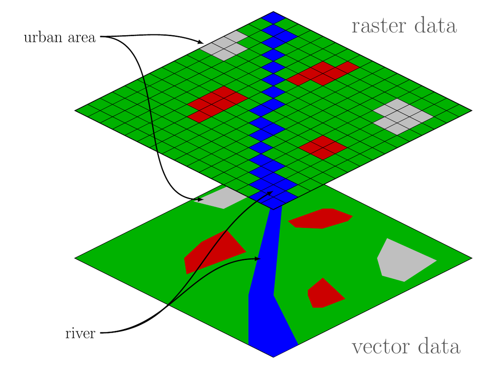
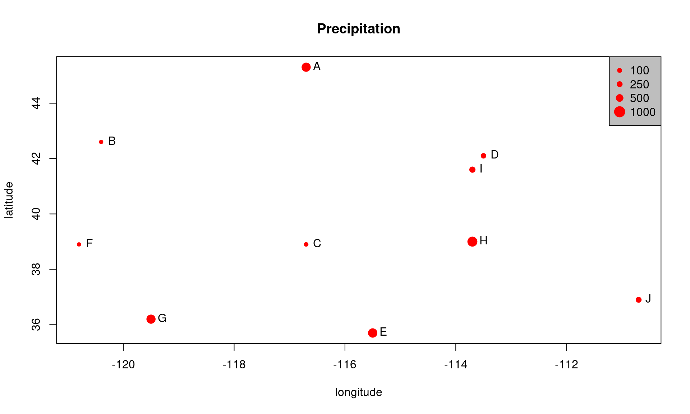
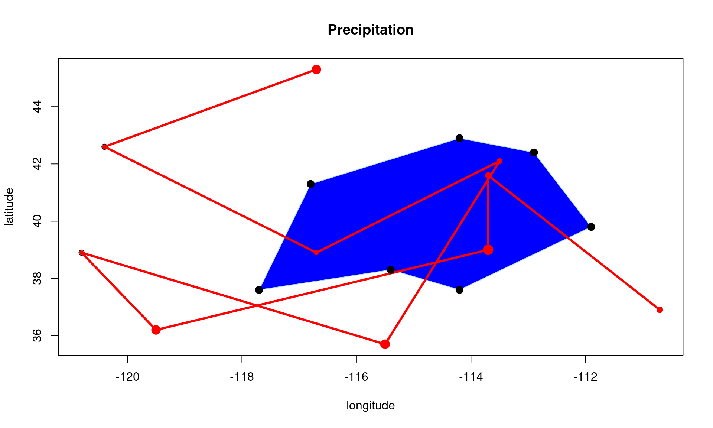
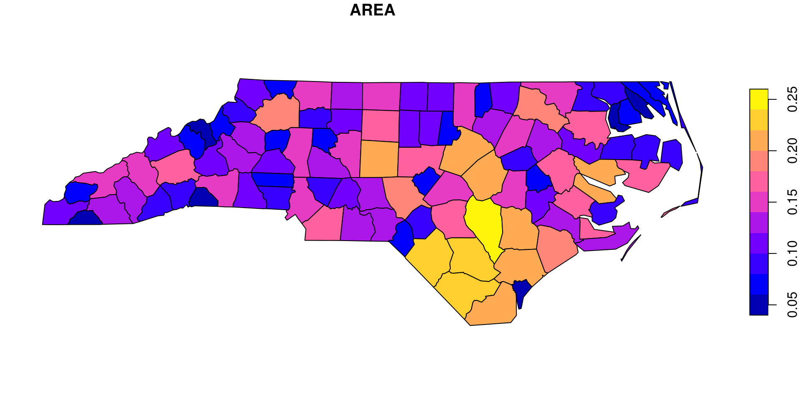
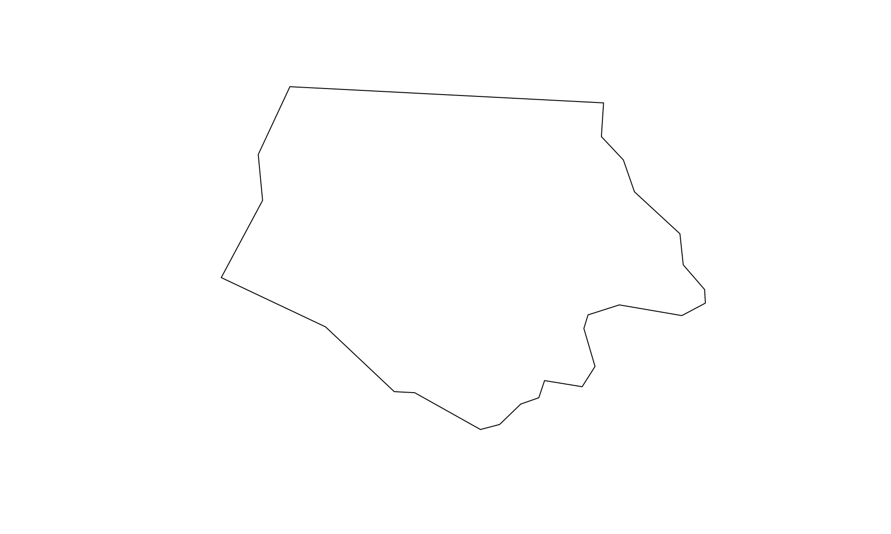
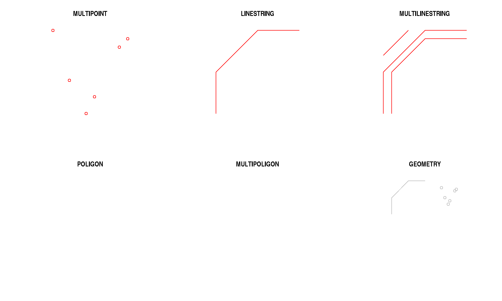
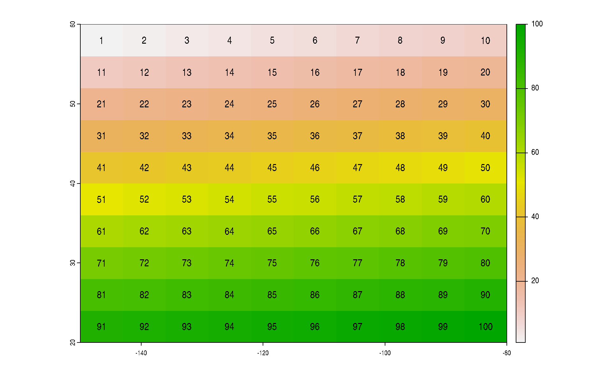
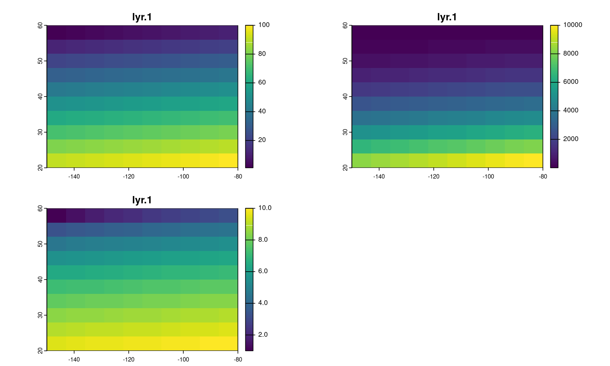
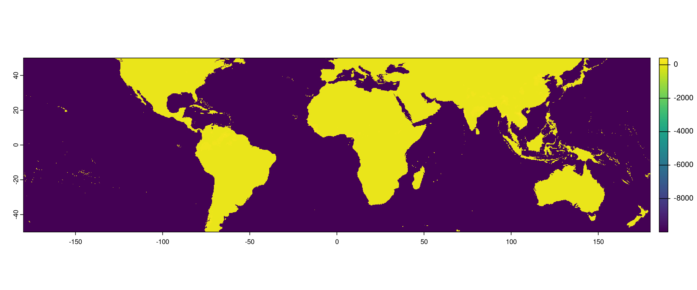
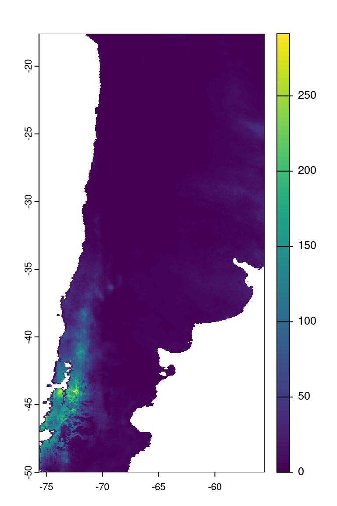

name <- LETTERS[1:10]
longitude <- c(-116.7, -120.4, -116.7, -113.5, -115.5,
-120.8, -119.5, -113.7, -113.7, -110.7)
latitude <- c(45.3, 42.6, 38.9, 42.1, 35.7, 38.9,
36.2, 39, 41.6, 36.9)
stations <- cbind(longitude, latitude)
# datos simulados de precipitación
set.seed(0)
precip <- round((runif(length(latitude))*10)^3)Datos Espaciales en R
Dr. Francisco Zambrano
Contenidos
Datos Espaciales en

Datos vectoriales: {sf}
Datos raster: {terra}

1. Datos espaciales en 
Tipos de dato espaciales
Discretos: datos vectorialesContinuos: datos raster
Simple representación de datos espaciales
Simple representación de datos espaciales
psize <- 1 + precip/500
plot(stations, cex=psize, pch=20, col='red', main='Precipitation')
# add names to plot
text(stations, name, pos=4)
# add a legend
breaks <- c(100, 250, 500, 1000)
legend.psize <- 1+breaks/500
legend("topright", legend=breaks, pch=20, pt.cex=legend.psize, col='red', bg='gray')Simple representación de datos espaciales
Simple representación de datos espaciales
lon <- c(-116.8, -114.2, -112.9, -111.9, -114.2, -115.4, -117.7)
lat <- c(41.3, 42.9, 42.4, 39.8, 37.6, 38.3, 37.6)
x <- cbind(lon, lat)
plot(stations, main='Precipitation')
polygon(x, col='blue', border='light blue')
lines(stations, lwd=3, col='red')
points(x, cex=2, pch=20)
points(stations, cex=psize, pch=20, col='red', main='Precipitation')Simple representación de datos espaciales
Simple representación de datos espaciales
Podemos almacenar datos espaciales en un data.frame
2. Datos espaciales vectoriales
Simple Feature {sf}
Utilizaremos
{sf}Tener cuidado ya que el más utilizado es
{sp}(mas antiguo)Muchos ejemplos o incluso usos que vean por ahí estarán con los tipos de datos definidos por
{sp}{sp}está siendo reemplazado por{sf}
Simple Feature: se refiere a un estándar formal (ISO 19125-1: 2004) que describe cómo los objetos en el mundo real se pueden representar en computadoras, con énfasis en la geometría espacial de estos objetos.
Simple Feature {sf}: Dimensiones
Todas las geometrias (puntos, lineas, polígonos) están formadas por puntos.
2, 3, o 4 dimensiones
Todos los puntos en una geometría tienen la misma dimensión
Ademas de
XeYhay dos opcionescoordinada
Zpara altitudcoordinada
Mmedición asociada con el punto (ej, tiempo en que fue medido)
Simple Feature {sf}: Dimensiones
Cuatro casos posibles:
2D (X,Y), (E, N), (Lon,Lat):
XY3D :
XYZ3D :
XYM4D :
XYZM
Simple Feature {sf}
Tipos de geometrías
| Tipo | Descripción |
|---|---|
POINT |
geometría dimensión cero, un punto |
LINESTRING |
varios puntos, secuencia de puntos conectados por líneas rectas que no se intersecan; geometría unidimensional |
POLYGON |
geometría con un área positiva (bidimensional); la secuencia de puntos forma un anillo cerrado que no se interseca |
MULTIPOINT |
grupo de POINT |
MULTILINESTRING |
grupo de LINESTRING |
MULTIPOLYGON |
grupo de POLYGON |
GEOMETRYCOLLECTION |
grupo de geometrías de cualquier tipo |
Simple Feature {sf}: Clases
Geometria -> list-column (tipo de dato)
Atributos -> data.frame
Como {sf} almacena las Simple Features. Las tres tipos de datos utilizados para representarlos son:
sf: la tabla (data.frame) con los atributos y geometría de la entidad , que contiene
sfc: lalist-columcon la geometría de cada entidad (registro), que está compuesto desfg: la geometría de la entidad de cadasimple featureindividual
Simple Feature {sf}: Clase sf
Reading layer `nc' from data source
`/home/francisco/R/x86_64-pc-linux-gnu-library/4.4/sf/shape/nc.shp'
using driver `ESRI Shapefile'
Simple feature collection with 100 features and 14 fields
Geometry type: MULTIPOLYGON
Dimension: XY
Bounding box: xmin: -84.32385 ymin: 33.88199 xmax: -75.45698 ymax: 36.58965
Geodetic CRS: NAD27Simple Feature {sf}: Clase sf
Simple Feature {sf}: Clase sf
Simple Feature {sf}: Clase sf
Simple Feature {sf}: Clase sf
Simple feature collection with 100 features and 6 fields
Geometry type: MULTIPOLYGON
Dimension: XY
Bounding box: xmin: -84.32385 ymin: 33.88199 xmax: -75.45698 ymax: 36.58965
Geodetic CRS: NAD27
First 3 features:
BIR74 SID74 NWBIR74 BIR79 SID79 NWBIR79 geometry
1 1091 1 10 1364 0 19 MULTIPOLYGON (((-81.47276 3...
2 487 0 10 542 3 12 MULTIPOLYGON (((-81.23989 3...
3 3188 5 208 3616 6 260 MULTIPOLYGON (((-80.45634 3...Simple Feature {sf}: Clase sf

VERDE: Simple Feature individual, atributos + geometría
AZUL: geometría (objeto de clase sfg)
ROJO: Simple Feature list-column (sfc)
Estructura datos espaciales vectoriales con {sf}
sfc (simple feature list-column)
Simple Feature {sf}: Clase sfc
Simple Feature {sf}: Clase sfc
Simple Feature {sf}: Clase sfc
Simple Feature {sf}: Clase sfc
[1] "n_empty" "crs" "class" "precision" "bbox" Coordinate Reference System:
User input: NAD27
wkt:
GEOGCRS["NAD27",
DATUM["North American Datum 1927",
ELLIPSOID["Clarke 1866",6378206.4,294.978698213898,
LENGTHUNIT["metre",1]]],
PRIMEM["Greenwich",0,
ANGLEUNIT["degree",0.0174532925199433]],
CS[ellipsoidal,2],
AXIS["latitude",north,
ORDER[1],
ANGLEUNIT["degree",0.0174532925199433]],
AXIS["longitude",east,
ORDER[2],
ANGLEUNIT["degree",0.0174532925199433]],
ID["EPSG",4267]]Simple Feature {sf}: Clase sfg
sfg (simple feature geometry) guarda la geometría de un a entidad individual, ej. un punto, una linea o polígono
Está implementada en en tipos de datos nativos de R (numeric, matrix, list), siguiendo la siguiente regla:
- un
POINTes unj vector numérico - un grupo de puntos, e.j. un
LINESTRINGo un anillo de unPOLYGONes unmatrixy cada fila de lamatrixes unPOINT - cualquier otro grupo es un
list
Simple Feature {sf}: Clase sfg
Simple Feature {sf}: Clase sfg
Simple Feature {sf}: Clase sfg
Simple Feature {sf}: Clase sfg
Simple Feature {sf}: Clase sfg
p1 <- rbind(c(0,0), c(1,0), c(3,2), c(2,4), c(1,4), c(0,0))
p2 <- rbind(c(1,1), c(1,2), c(2,2), c(1,1))
pol <-st_polygon(list(p1,p2))
p3 <- rbind(c(3,0), c(4,0), c(4,1), c(3,1), c(3,0))
p4 <- rbind(c(3.3,0.3), c(3.8,0.3), c(3.8,0.8), c(3.3,0.8), c(3.3,0.3))[5:1,]
p5 <- rbind(c(3,3), c(4,2), c(4,3), c(3,3))
(mpol <- st_multipolygon(list(list(p1,p2), list(p3,p4), list(p5))))
(gc <- st_geometrycollection(list(mp, mpol, ls)))Simple Feature {sf}: Clase sfg
par(mfrow=c(2,3))
plot(mp,col='red',main = 'MULTIPOINT')
plot(ls,col='red',main = 'LINESTRING')
plot(mls,col='red',main = 'MULTILINESTRING')
plot(pol,col = 'gray',border='red',main = 'POLIGON')
plot(mpol,col = 'gray',border='red',main = 'MULTIPOLIGON')
plot(gc,col = 'gray',border='red',main = 'GEOMETRY')Simple Feature {sf}: Clase sfg
3. Datos espaciales raster
¿Con qué vamos a trabajas?
Vamos a utilizar el paquete
{terra}{terra}está reemplazando a{raster}, ya que es más simple y rapido.Pero, similar a
{sp}, mucha información que encuentren estará con{raster}Similar es lo que pasa con
{stars}, no obstante el futuro der-spatialserá con{stars},{terra}y{sf}
{terra}
El paquete {terra} tiene funciones para crear, leer, manipular y guardar datos raster.
Las clase definida por {terra} es SpatRaster
{terra}
- representa un raster multi-capa
- siempre almacena los parametros fundamentales que describen la geometria
- número de columnas y filas
- extensión espacial
- sistema de referencia de coordenadas (SRC)
- adicionalmente guarda información del archivo en donde se almacenan los valores del raster.
- O, si no existe el archvio es por que
SpatRasterlo puede almacenar en memoria.
Crear un SpatRaster
Crear un SpatRaster
El objeto r solo tiene el esqueleto del raster, pero aún no tiene valores
Crear un SpatRaster
El objeto r solo tiene el esqueleto del raster, pero aún no tiene valores
Crear un SpatRaster
También le podria asignar otros valores, por ejemplo el número de celda
Crear un SpatRaster
También le podria asignar otros valores, por ejemplo el número de celda
Crear un SpatRaster multi-capa
Puedes creart un objeto multi-capa usando la función c
class : SpatRaster
dimensions : 10, 10, 3 (nrow, ncol, nlyr)
resolution : 7, 4 (x, y)
extent : -150, -80, 20, 60 (xmin, xmax, ymin, ymax)
coord. ref. : lon/lat WGS 84
source(s) : memory
names : lyr.1, lyr.1, lyr.1
min values : 1, 1, 1
max values : 100, 10000, 10 Crear un SpatRaster multi-capa
4. Leer y guardar datos espaciales en R
Vectoriales
Usando {sf}
- leer: st_read, read_sf
- guardar: st_write, write_sf
Vectoriales
Reading layer `nc' from data source
`/home/francisco/R/x86_64-pc-linux-gnu-library/4.4/sf/shape/nc.shp'
using driver `ESRI Shapefile'
Simple feature collection with 100 features and 14 fields
Geometry type: MULTIPOLYGON
Dimension: XY
Bounding box: xmin: -84.32385 ymin: 33.88199 xmax: -75.45698 ymax: 36.58965
Geodetic CRS: NAD27Layer nc in dataset nc.shp already exists:
use either append=TRUE to append to layer or append=FALSE to overwrite layerError in eval(expr, envir, enclos): Dataset already exists.Vectoriales
Reading layer `nc' from data source
`/home/francisco/R/x86_64-pc-linux-gnu-library/4.4/sf/shape/nc.shp'
using driver `ESRI Shapefile'
Simple feature collection with 100 features and 14 fields
Geometry type: MULTIPOLYGON
Dimension: XY
Bounding box: xmin: -84.32385 ymin: 33.88199 xmax: -75.45698 ymax: 36.58965
Geodetic CRS: NAD27Deleting layer `nc' using driver `ESRI Shapefile'
Writing layer `nc' to data source `nc.shp' using driver `ESRI Shapefile'
Writing 100 features with 14 fields and geometry type Multi Polygon.Vectoriales
Drivers soportados por GDAL
Listar las capas presentes en un archivo
Driver: OSM
Available layers:
layer_name geometry_type features fields crs_name
1 points Point NA 10 WGS 84
2 lines Line String NA 9 WGS 84
3 multilinestrings Multi Line String NA 4 WGS 84
4 multipolygons Multi Polygon NA 25 WGS 84
5 other_relations Geometry Collection NA 4 WGS 84Vectoriales {.smaller}
CRUD (create, read, update, delete)
GDAL proporciona CRUD (st_read,read_st,st_write,write_st)
Los siguientes argumentos
update=TRUEactualiza si existe, por defecto esTRUEdelete_layer=TRUEabre el archivo y borra la capa, no genera error si el archivo o la capa no existendelete_dsn=TRUEborra el archvivo si existe. Utilizar con cuidado!
Rasters
Con {terra}
- leer: rast
- guardar: writeRaster
Rasters
Leer
La función rast se puede utilizar sobre un archvio de una capa o multi-capa
class : SpatRaster
dimensions : 77, 101, 3 (nrow, ncol, nlyr)
resolution : 1, 1 (x, y)
extent : 0, 101, 0, 77 (xmin, xmax, ymin, ymax)
coord. ref. : +proj=merc +lon_0=0 +k=1 +x_0=0 +y_0=0 +datum=WGS84 +units=m +no_defs
source : rlogo.grd
colors RGB : 1, 2, 3
names : red, green, blue
min values : 0, 0, 0
max values : 255, 255, 255 Rasters
Leer
Rasters
Leer archivos locales
Notar que r es un SpatRaster de tres capas (bandas). Podemos extraer sólo una banda.
La segunda banda ::: {.cell}
class : SpatRaster
dimensions : 77, 101, 1 (nrow, ncol, nlyr)
resolution : 1, 1 (x, y)
extent : 0, 101, 0, 77 (xmin, xmax, ymin, ymax)
coord. ref. : +proj=merc +lon_0=0 +k=1 +x_0=0 +y_0=0 +datum=WGS84 +units=m +no_defs
source : rlogo.grd
name : green
min value : 0
max value : 255 :::
Rasters
Leer archivos HTTP/FTP
Terra usa GDAL que tiene soporte para Virtual File Systems.
/vsizip, /vsitar, /vsicurl
Por ejemplo, abrir el producto de precipitación mensual del mes de septiembre año 2021 del producto CHIRPS v2.0 que está almacenado en formato COG (cloud opimized geotiff)
Rasters
Leer archivos HTTP/FTP
Rasters
En Chile
Rasters
Guardar
Use la función writeRaster para guardar datos raster.
Debe dar como argumento un objeto
SpatRastery un nombre de archivo.El formato se identifica por la extensión.
overwrite = TRUEpara sobrescribir el archivo

IMSD1025|2-2024